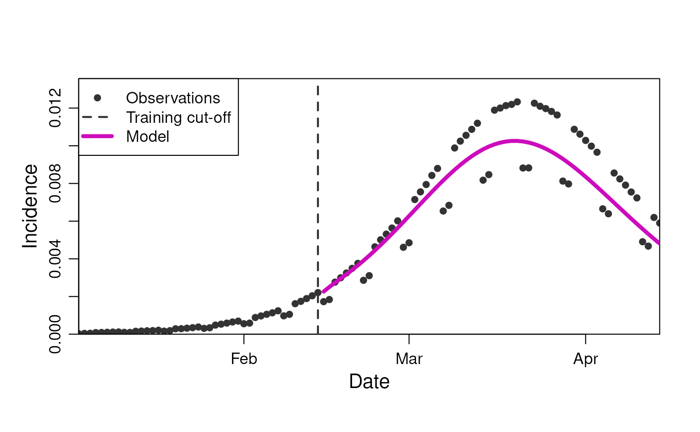
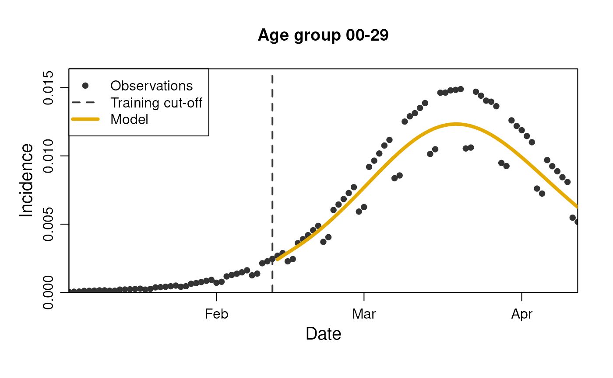
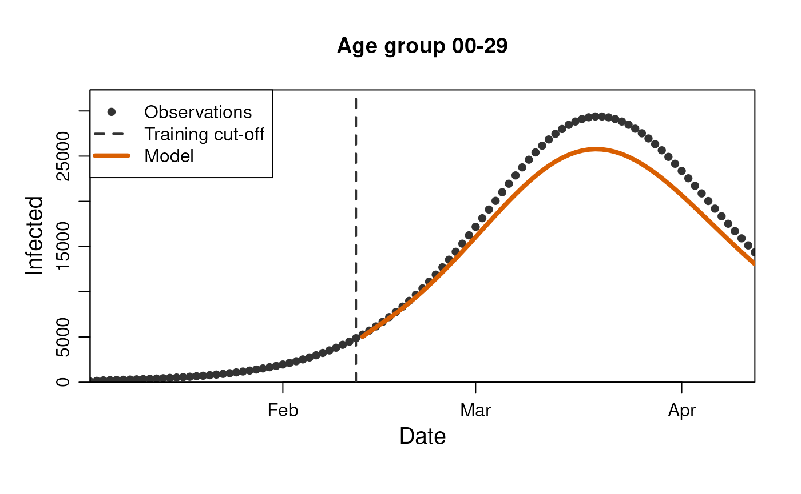
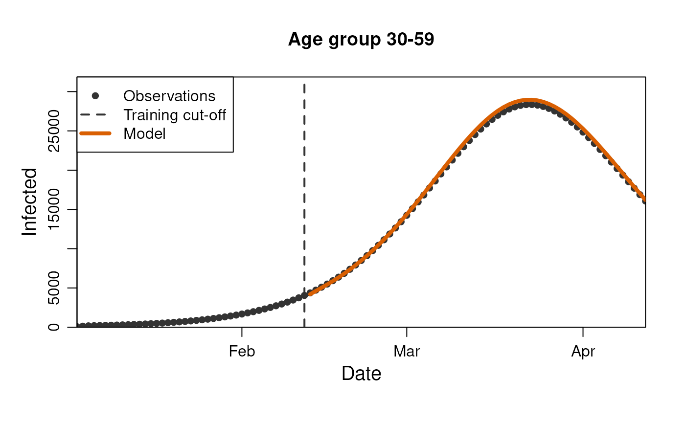
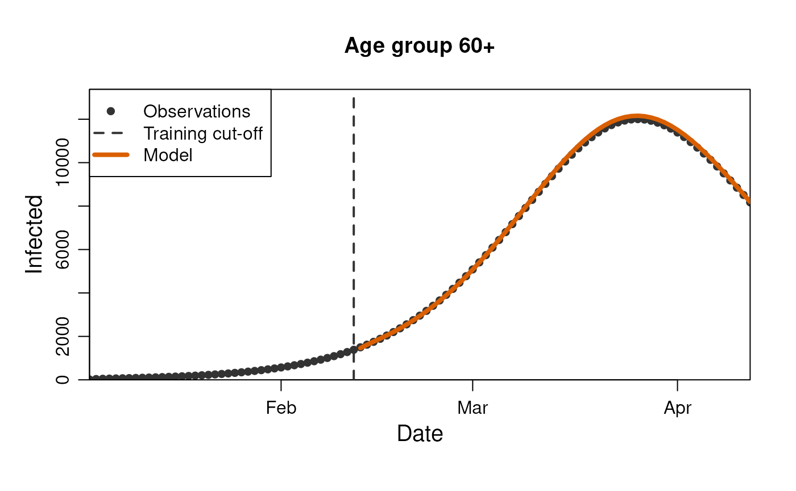
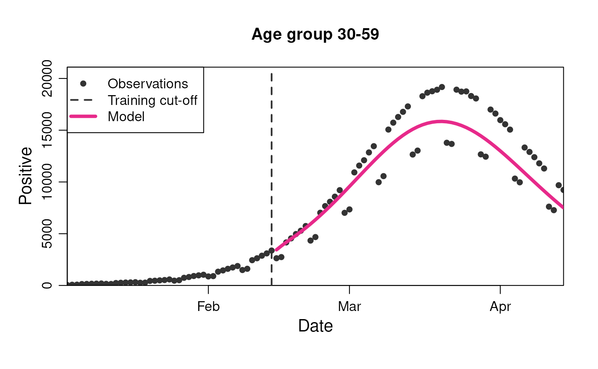
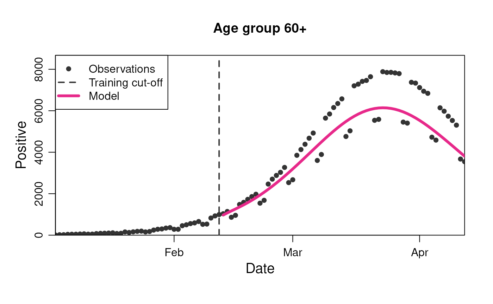
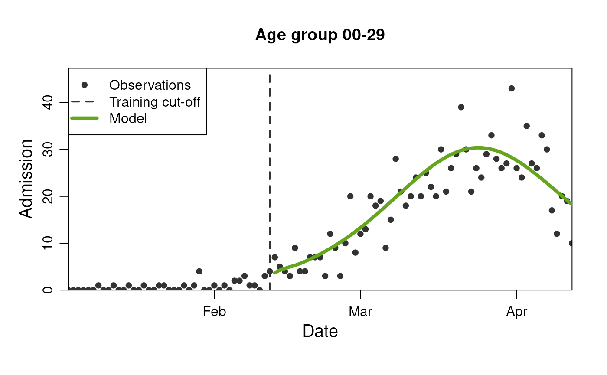
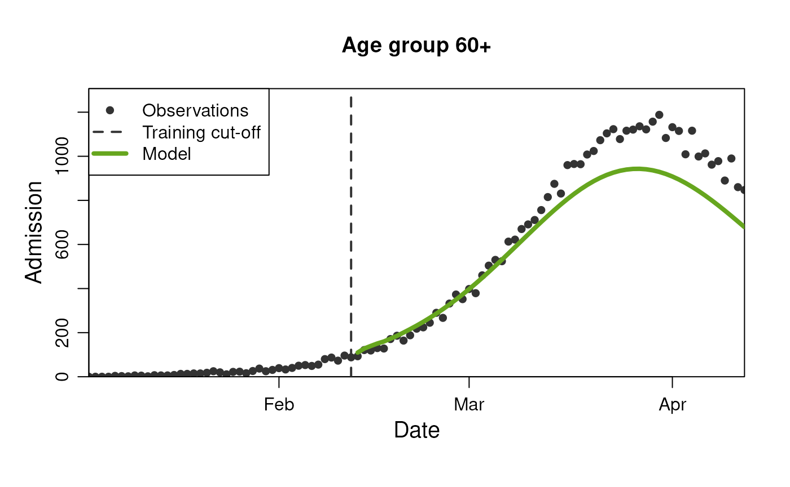
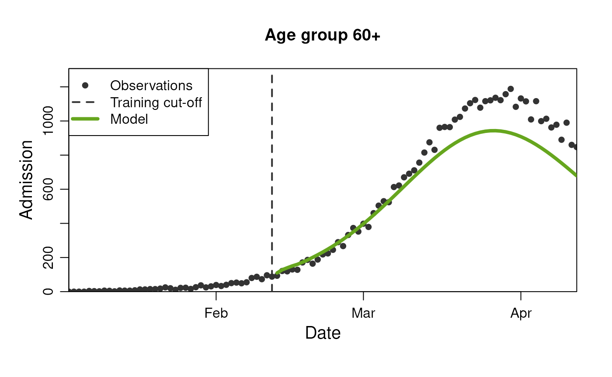

library(diseasy)
#> Loading required package: diseasystore
#>
#> Attaching package: 'diseasy'
#> The following object is masked from 'package:diseasystore':
#>
#> diseasyoptionIntroduction
One of the model families in diseasy is the family of
Ordinary Differential Equation (ODE) models. This family of models is
presently represented only by the ?DiseasyModelOdeSeir, a
model template that implements SEIR (Susceptible, Exposed, Infected,
Recovered) ODE models according to user specification. This template
allows for any number of
,
or
states in the model and interfaces with the ?DiseasySeason,
?DiseasyActivity, ?DiseasyVariant and
?DiseasyImmunity modules for scenario definitions.
The workflow for creating a specific
?DiseasyModelOdeSeir model would roughly follow these
steps:
-
Defining the scenario. The first step to using most
models in
diseasyis to define the scenario. That is, to configure the functional modules that the model templates takes as argument (e.g.?DiseasyActivity). These steps provide the model template with information about the population, the activity, variants to include etc. -
Choosing the model configuration. The model
template may have some configurability that you control. In the case of
?DiseasyModelOdeSeirfor example, you must choose the number of consecutive , and states in the model. - Mapping to observables. The ODE family of models is in some ways bespoke in the sense that the user needs provide a mapping from the observables to the “true” incidence of infections. The model is then initialised from this estimated incidence. If the model should provide predictions for observables other than the “true” incidence, the user needs to provide mapping between the model incidence and the observables in question.
These steps are outlined in individual sections below where we work through defining a model in a specific example. Note that this example is contrived in the sense that the data we use in this example have been generated with this exact model template and we therefore can match the observations near-perfectly.
Example data
The data we will use this example is provided by
?DiseasystoreSeirExample which represents data in a Danish
context.
We first create an observables module to interface with this data:
# Configure a observables module with the example data and database
observables <- DiseasyObservables$new(
diseasystore = DiseasystoreSeirExample,
conn = DBI::dbConnect(RSQLite::SQLite())
)The data is stratified by age and covers a single infection wave. It contains three observables of interest for our example:
- n_infected: The true number of infected in the data.
- n_positive: The observed subset of infected (65% of true infected are observed but fewer are observed during the weekend).
- n_admissions: The number of new hospital admissions due to infections (risk of hospitalisation dependent on age group).
When running the models, we should also define at what point in time
they should provide predictions for. This is done by setting the
last_queryable_date in the observables module:
last_queryable_date <- observables$ds$min_start_date + 40Lets first look at the data we have available:
observables$get_observation(
observable = "n_infected",
stratification = rlang::quos(age_group),
start_date = observables$ds$min_start_date,
end_date = observables$ds$max_end_date
) |>
ggplot2::ggplot(ggplot2::aes(x = date, y = n_infected)) +
ggplot2::geom_vline(
xintercept = last_queryable_date,
color = "black",
linetype = "dashed"
) +
ggplot2::geom_point(color = "deepskyblue3") +
ggplot2::labs(title = "True number of infected") +
ggplot2::facet_grid(~ age_group)
observables$get_observation(
observable = "n_positive",
stratification = rlang::quos(age_group),
start_date = observables$ds$min_start_date,
end_date = observables$ds$max_end_date
) |>
ggplot2::ggplot(ggplot2::aes(x = date, y = n_positive)) +
ggplot2::geom_vline(
xintercept = last_queryable_date,
color = "black",
linetype = "dashed"
) +
ggplot2::geom_point(color = "seagreen") +
ggplot2::labs(title = "Observed number of positive cases") +
ggplot2::facet_grid(~ age_group)
observables$get_observation(
observable = "n_admission",
stratification = rlang::quos(age_group),
start_date = observables$ds$min_start_date,
end_date = observables$ds$max_end_date
) |>
ggplot2::ggplot(ggplot2::aes(x = date, y = n_admission)) +
ggplot2::geom_vline(
xintercept = last_queryable_date,
color = "black",
linetype = "dashed"
) +
ggplot2::geom_point(color = "violetred3") +
ggplot2::labs(title = "Number of admissions") +
ggplot2::facet_grid(~ age_group)
Defining the scenario
The first step to creating a ?DiseasyModelOdeSeir model
is to define the scenario. In this case, as we stated above, we can
exactly match the scenario to the data since the data was created using
this class of models.
First we define the activity scenario via the
?DiseasyActivity module. This scenario describes the
changes in activity in the society (e.g. restrictions). To see more on
how to configure this module, see
vignette("diseasy-activity").
# Configure an activity module using Danish population and contact information.
activity <- DiseasyActivity$new()
activity$set_contact_basis(contact_basis = contact_basis$DK)
activity$set_activity_units(dk_activity_units)
# The level of activity is fixed to the "baseline" level throughout the simulation.
activity$change_activity(date = as.Date("2020-01-01"), opening = "baseline")This particular scenario also include simple seasonality and waning immunity:
# Waning immunity scenario
immunity <- DiseasyImmunity$new()
immunity$set_exponential_waning(time_scale = 180)
#> $infection
#> function (t)
#> exp(-t/time_scale)
#> <environment: 0x5619c3bd8e08>
#> attr(,"name")
#> [1] "exponential_waning"
#> attr(,"dots")
#> attr(,"dots")$time_scale
#> [1] 180
# Season scenario
season <- DiseasySeason$new()
season$set_reference_date(as.Date("2020-01-01"))
season$use_cosine_season()Choosing the model configuration
The ?DiseasyModelOdeSeir model template has a number of
hyperparameters and parameters that should be configured for the model
to run.
The hyperparameters are:
- compartment_structure: A named vector specifying the number of consecutive , and states in the model.
- age_cuts_lower: A vector of age cuts for the age groups in the model.
The parameters are:
- disease_progression_rates: A named vector specifying the progression rates from to and from to (i.e. waiting times).
- overall_infection_risk: The overall risk of infection in the population (the overall scaling of infectivity).
Mapping observables to model and back
Being a SEIR model, the ?DiseasyModelOdeSeir model
template runs the dynamics of the infections in the population. These
dynamics are inferred from the incidence of the disease in the
population. The model then predicts the evolution of the incidence1 under the
given configuration. To get predictions for other observables, we must
map from the incidence to the observable of interest.
Mathematically, we map from the set of observables to the incidence via the map :
From the model incidence , we then map to the observable estimates via the maps :
Mapping from observables to incidence
For the model to be initialised, it needs an estimate of the
incidence in the population. This incidence is then used to infer the
dynamics of the disease in the population (See the article
SEIR-initialisation in the online documentation for more
information).
If an estimate of the incidence is not defined in the
diseasystore, or if you wish to provide your own estimate
from the observable, we can define a “synthetic observable” in the
DiseasyObservables module for the model to use.
In this example, the incidence is not defined in the
diseasystore and we therefore define a synthetic observable
for the incidence which maps from the number of positive cases to the
incidence. In many cases, testing data may not be reliable, and you may
want to infer the incidence from other sources such as waste water data
or admissions data.
# Map observables to incidence
observables$define_synthetic_observable(
name = "incidence",
mapping = \(n_positive, n_population) n_positive / (n_population * 0.65)
)Mapping from model incidence to observables
By default, the model can only return predictions for the true number
of infected (n_infected) and the incidence
(incidence) since these are the only observables “known” to
the model. Any additional observables must be mapped from the incidence
provided by the model.
To this purpose, we define a “map” and a “reduce” function: The
map function is passed to a dplyr::group_map()
call on a data.frame grouped by the stratification. The
function should be a two-argument function where the first argument
contains a data.frame with columns n_infected
and population (i.e. the size of the group), and where the
second argument contains the group (as a data.frame). Note
that the output of this function should contain the groups provided in
the second argument.
The reduce function is passed to a
dplyr::summarise() call on the output of the map. By
default, a simple sum is used which works for all counting data. If the
observable is not a count, the user must provide a custom reduce
function. For example, the incidence is a rate and to summarise a
weighted sum must be made.
In this example, we define maps from the incidence to the number of positive cases and the number of hospital admissions. These are both counting observables and the default reduce function can be used.
# Maps between the internal model incidence and observables
map_to_n_positive <- list(
"map" = \(.x, .y) {
dplyr::mutate(.y, "n_positive" = 0.65 * .x$n_infected)
}
)
map_to_n_admission <- list(
"map" = \(.x, .y) {
risk_of_admission <- c("00-29" = 0.001, "30-59" = 0.01, "60+" = 0.1)
delay_distribution <- c(0, 0, 0.2, 0.3, 0.3, 0.1, 0.1) # Must sum = 1
n_total_admissions <- .x$n_infected * risk_of_admission[.y$age_group]
cbind(
.y,
data.frame(
"delay" = seq_along(delay_distribution) - 1,
"n_admission" = n_total_admissions * delay_distribution
)
) |>
dplyr::mutate("date" = .data$date + .data$delay) |>
dplyr::select(!"delay")
}
)
# These maps are provided via a list to the model with the names of
# the elements denoting the observable being mapped to.
model_output_to_observable <- list(
"n_positive" = map_to_n_positive,
"n_admission" = map_to_n_admission
)Putting it all together
With all the configuration done above, we can now create our model instance.
model <- DiseasyModelOdeSeir$new(
# Scenario configuration
activity = activity,
immunity = immunity,
season = season,
observables = observables,
parameters = list(
# Parameter and hyper-parameter configuration
"compartment_structure" = compartment_structure,
"age_cuts_lower" = age_cuts_lower,
"overall_infection_risk" = overall_infection_risk,
"disease_progression_rates" = disease_progression_rates,
# Mapping to observables
"model_output_to_observable" = model_output_to_observable
)
)Predicting the incidence
From this point, we can easily get predictions for the individual observables.
model$get_results(
observable = "incidence",
prediction_length = 5
)
#> # A tibble: 5 × 4
#> date incidence realisation_id weight
#> <date> <dbl> <dbl> <dbl>
#> 1 2020-02-13 0.00185 1 1
#> 2 2020-02-14 0.00204 1 1
#> 3 2020-02-15 0.00222 1 1
#> 4 2020-02-16 0.00241 1 1
#> 5 2020-02-17 0.00259 1 1… and we can plot the predictions along with observations for the data
plot(
model,
observable = "incidence",
prediction_length = 60
)
The results are easily stratified by the stratifications in the data
model$get_results(
observable = "incidence",
prediction_length = 3,
stratification = rlang::quos(age_group)
)
#> # A tibble: 9 × 5
#> date age_group incidence realisation_id weight
#> <date> <chr> <dbl> <dbl> <dbl>
#> 1 2020-02-13 00-29 0.00241 1 1
#> 2 2020-02-14 00-29 0.00266 1 1
#> 3 2020-02-15 00-29 0.00290 1 1
#> 4 2020-02-13 30-59 0.00190 1 1
#> 5 2020-02-14 30-59 0.00210 1 1
#> 6 2020-02-15 30-59 0.00229 1 1
#> 7 2020-02-13 60+ 0.000987 1 1
#> 8 2020-02-14 60+ 0.00109 1 1
#> 9 2020-02-15 60+ 0.00119 1 1… and we can see the plots for each strata.
plot(
model,
observable = "incidence",
prediction_length = 60,
stratification = rlang::quos(age_group)
)
This can be done for all the observables we have mapped in the model.
model$get_results(
observable = "n_infected",
prediction_length = 5
)
#> # A tibble: 5 × 4
#> date n_infected realisation_id weight
#> <date> <dbl> <dbl> <dbl>
#> 1 2020-02-13 10846. 1 1
#> 2 2020-02-14 11975. 1 1
#> 3 2020-02-15 13057. 1 1
#> 4 2020-02-16 14124. 1 1
#> 5 2020-02-17 15221. 1 1
plot(
model,
observable = "n_infected",
prediction_length = 60
)
model$get_results(
observable = "n_infected",
prediction_length = 3,
stratification = rlang::quos(age_group)
)
#> # A tibble: 9 × 5
#> date age_group n_infected realisation_id weight
#> <date> <chr> <dbl> <dbl> <dbl>
#> 1 2020-02-13 00-29 5043. 1 1
#> 2 2020-02-14 00-29 5568. 1 1
#> 3 2020-02-15 00-29 6071. 1 1
#> 4 2020-02-13 30-59 4309. 1 1
#> 5 2020-02-14 30-59 4757. 1 1
#> 6 2020-02-15 30-59 5187. 1 1
#> 7 2020-02-13 60+ 1494. 1 1
#> 8 2020-02-14 60+ 1651. 1 1
#> 9 2020-02-15 60+ 1799. 1 1
plot(
model,
observable = "n_infected",
prediction_length = 60,
stratification = rlang::quos(age_group)
)
model$get_results(
observable = "n_positive",
prediction_length = 5
)
#> # A tibble: 5 × 4
#> date n_positive realisation_id weight
#> <date> <dbl> <dbl> <dbl>
#> 1 2020-02-13 7050. 1 1
#> 2 2020-02-14 7784. 1 1
#> 3 2020-02-15 8487. 1 1
#> 4 2020-02-16 9180. 1 1
#> 5 2020-02-17 9894. 1 1
plot(
model,
observable = "n_positive",
prediction_length = 60
)
model$get_results(
observable = "n_positive",
prediction_length = 3,
stratification = rlang::quos(age_group)
)
#> # A tibble: 9 × 5
#> date age_group n_positive realisation_id weight
#> <date> <chr> <dbl> <dbl> <dbl>
#> 1 2020-02-13 00-29 3278. 1 1
#> 2 2020-02-14 00-29 3619. 1 1
#> 3 2020-02-15 00-29 3946. 1 1
#> 4 2020-02-13 30-59 2801. 1 1
#> 5 2020-02-14 30-59 3092. 1 1
#> 6 2020-02-15 30-59 3371. 1 1
#> 7 2020-02-13 60+ 971. 1 1
#> 8 2020-02-14 60+ 1073. 1 1
#> 9 2020-02-15 60+ 1169. 1 1
plot(
model,
observable = "n_positive",
prediction_length = 60,
stratification = rlang::quos(age_group)
)
model$get_results(
observable = "n_admission",
prediction_length = 5
)
#> # A tibble: 5 × 4
#> date n_admission realisation_id weight
#> <date> <dbl> <dbl> <dbl>
#> 1 2020-02-13 145. 1 1
#> 2 2020-02-14 169. 1 1
#> 3 2020-02-15 185. 1 1
#> 4 2020-02-16 199. 1 1
#> 5 2020-02-17 211. 1 1
plot(
model,
observable = "n_admission",
prediction_length = 60
)
model$get_results(
observable = "n_admission",
prediction_length = 3,
stratification = rlang::quos(age_group)
)
#> # A tibble: 9 × 5
#> date age_group n_admission realisation_id weight
#> <date> <chr> <dbl> <dbl> <dbl>
#> 1 2020-02-13 00-29 3.76 1 1
#> 2 2020-02-14 00-29 4.35 1 1
#> 3 2020-02-15 00-29 4.71 1 1
#> 4 2020-02-13 30-59 32.0 1 1
#> 5 2020-02-14 30-59 37.0 1 1
#> 6 2020-02-15 30-59 40.2 1 1
#> 7 2020-02-13 60+ 110. 1 1
#> 8 2020-02-14 60+ 128. 1 1
#> 9 2020-02-15 60+ 140. 1 1
plot(
model,
observable = "n_admission",
prediction_length = 60,
stratification = rlang::quos(age_group)
) 
